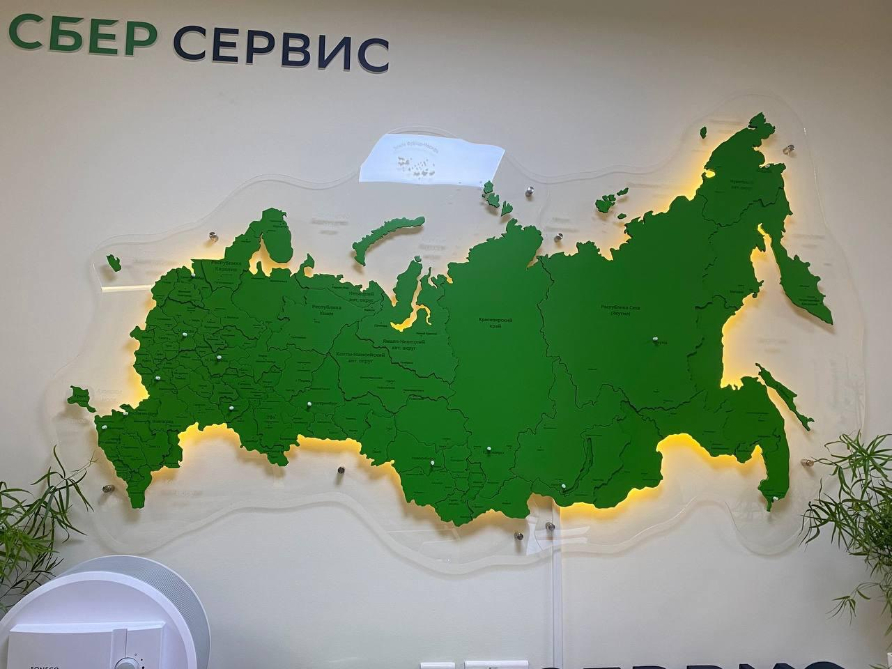
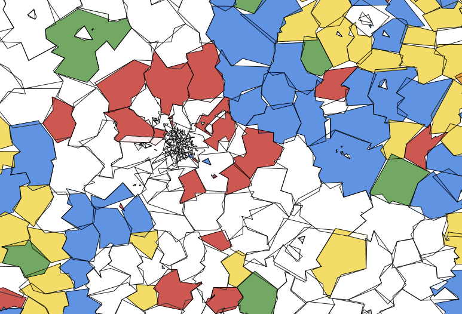
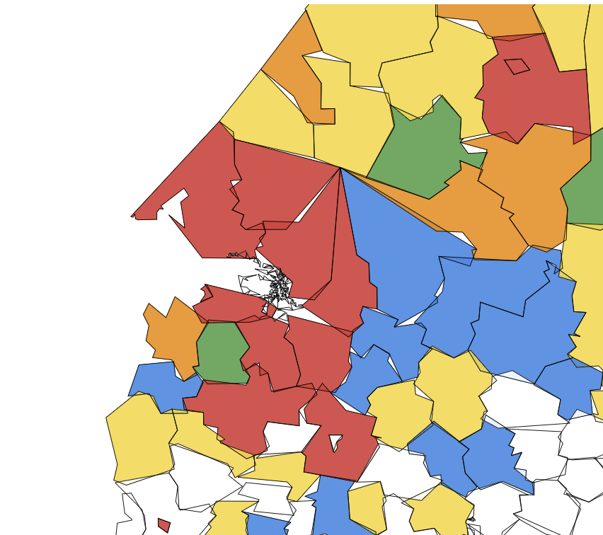
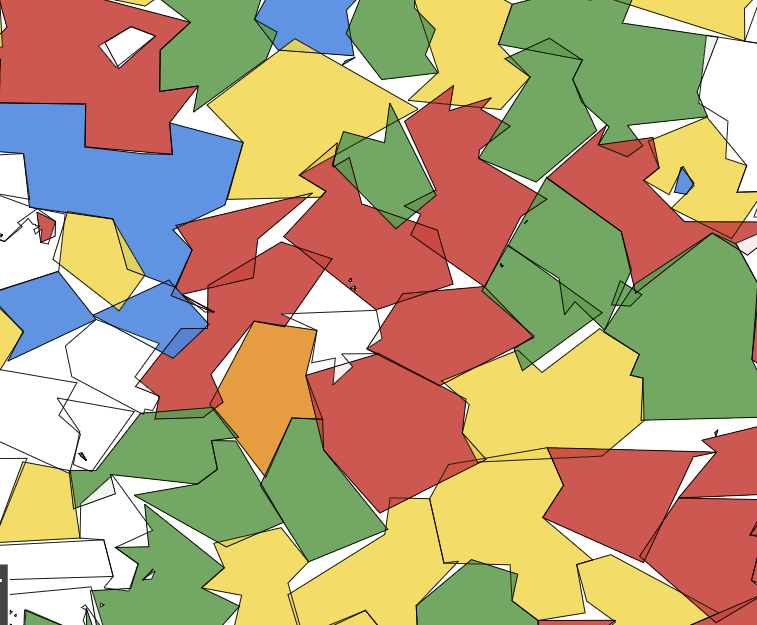

Выявление экономической структуры российских муниципалитетов с использованием кластеризации на атрибутированных сетях.
В исследовании использованы данные Сбер.Индекса и Росстата по 1094 муниципальным образованиям России за 2023–2024 годы. На их основе для каждого МО рассчитывались показатели потребительского поведения и отраслевой структуры.
Здоровье_share) — доля расходов на здоровье в общем объёме потребительских трат МО.Маркетплейсы_share) — доля расходов на онлайн-площадки.Общественное питание_share) — доля расходов на кафе, рестораны, столовые.Продовольствие_share) — доля расходов на продукты питания.Транспорт_share) — доля расходов на транспортные услуги.share_industry) — доля занятых в промышленности.share_agriculture) — доля занятых в сельском хозяйстве.share_services) — доля занятых в сфере услуг.urban_share) — доля городского населения в МО.population) — численность населения МО, чел.Загружены данные о потребительских расходах, средней заработной плате, населении и отраслевой структуре муниципальных образований. Источники представлены в формате Parquet и CSV.
Накопительные показатели, представленные за периоды от начала года, преобразованы в значения отдельных месяцев.
Названия МО, которые различались в разных датасетах, приведены к одному списку, чтобы корректно сопоставить записи из разных наборов данных.
Данные объединены по региону, муниципальному образованию, году и месяцу. Для каждого МО сформирован набор показателей потребления, зарплаты, населения и отраслевой структуры за 2023–2024.
Показатели категорий потребления и отраслей преобразованы в относительные доли. Обработаны пропуски, удалены некорректные бесконечные значения, доли ограничены диапазоном от 0 до 1.
Для выбора конфигурации сравниваются 4 метода построения рёбер и 3 значения параметра resolution. Лучший из них выбирается с помощью взвешенного Borda Score.
| method | resolution | k | SW | CH | S_Dbw | AVI | AVU | MQ |
|---|---|---|---|---|---|---|---|---|
| adaptive_rbf | 0.9 | 6.50 | 0.1408 | 0.1606 | 1.8099 | 0.6322 | 0.4933 | 0.1340 |
| adaptive_rbf | 1.0 | 5.50 | 0.1323 | 0.1623 | 2.0307 | 0.6307 | 0.5244 | 0.0824 |
| adaptive_rbf | 1.1 | 6.75 | 0.1118 | 0.1467 | 1.9867 | 0.5799 | 0.5061 | 0.0943 |
| cosine | 0.9 | 4.92 | 0.1537 | 0.1641 | 2.0526 | 0.6637 | 0.5765 | 0.3000 |
| cosine | 1.0 | 4.25 | 0.1485 | 0.1682 | 2.1402 | 0.7072 | 0.6169 | 0.2801 |
| cosine | 1.1 | 4.71 | 0.1469 | 0.1674 | 2.1602 | 0.6850 | 0.6097 | 0.2918 |
| mutual_knn | 0.9 | 4.75 | 0.1477 | 0.1651 | 2.0158 | 0.6569 | 0.5446 | 0.2339 |
| mutual_knn | 1.0 | 4.29 | 0.1348 | 0.1675 | 2.1716 | 0.6734 | 0.5907 | 0.2120 |
| mutual_knn | 1.1 | 4.79 | 0.1225 | 0.1585 | 2.1405 | 0.6433 | 0.5755 | 0.2174 |
| tanimoto | 0.9 | 8.83 | 0.1516 | 0.0905 | 0.8914 | 0.6304 | 0.2576 | 0.3804 |
| tanimoto | 1.0 | 7.96 | 0.1415 | 0.0958 | 0.9234 | 0.6515 | 0.2741 | 0.3590 |
| tanimoto | 1.1 | 9.38 | 0.0201 | 0.0819 | 1.0023 | 0.5065 | 0.2521 | 0.3366 |
Для выбора лучшего метода использован взвешенный Borda Score, так как часть метрик сильно коррелирует между собой по Спирмену, и без учёта весов это искажает итоговый рейтинг. Метод tanimoto исключён: он даёт слишком много кластеров (8–10), и результат трудно интерпретировать. Из оставшихся лучший результат показал cosine при resolution = 0.9.
| # | method | resolution | Borda Score |
|---|---|---|---|
| 1 | cosine | 0.9 | 5.079065 |
| 2 | adaptive_rbf | 0.9 | 5.068545 |
| 3 | mutual_knn | 0.9 | 4.956219 |
| 4 | cosine | 1.1 | 4.164959 |
| 5 | cosine | 1.0 | 4.106639 |
| 6 | adaptive_rbf | 1.1 | 3.460979 |
| 7 | adaptive_rbf | 1.0 | 3.370495 |
| 8 | mutual_knn | 1.1 | 2.920734 |
| 9 | mutual_knn | 1.0 | 2.872365 |
Новые кластеры не создавались: разбиение всех последующих месяцев было сопоставлено с уже выделенными пятью кластерами января 2023 года. Если в новом месяце кластеров оказывалось больше, каждый из них назначался одному из пяти существующих — по минимальному расстоянию до центроида. В таблице приведены средние расстояния, по которым проводилось сопоставление.
| Кластер | Среднее расстояние |
|---|---|
| 0 | 2.603289 |
| 1 | 2.586572 |
| 2 | 2.598895 |
| 3 | 2.568309 |
| 4 | 2.598895 |
Средняя дистанция — 2.5989. Кластеры устойчивы во времени.
| Показатель | Кластер 0 | Кластер 1 | Кластер 2 | Кластер 3 | Кластер 4 |
|---|---|---|---|---|---|
| Доля расходов на здоровье | 0.053 | 0.048 | 0.052 | 0.049 | 0.042 |
| Доля расходов на маркетплейсы | 0.111 | 0.130 | 0.130 | 0.121 | 0.089 |
| Доля расходов на общественное питание | 0.049 | 0.017 | 0.018 | 0.033 | 0.033 |
| Доля расходов на продовольствие | 0.392 | 0.497 | 0.486 | 0.449 | 0.451 |
| Доля расходов на транспорт | 0.073 | 0.053 | 0.057 | 0.054 | 0.051 |
| Доля занятых в промышленности | 0.211 | 0.082 | 0.105 | 0.411 | 0.171 |
| Доля занятых в сельском хозяйстве | 0.028 | 0.025 | 0.200 | 0.021 | 0.023 |
| Доля занятых в сфере услуг | 0.730 | 0.748 | 0.603 | 0.524 | 0.724 |
| Доля городского населения | 0.636 | 0.483 | 0.302 | 0.779 | 0.735 |
| Средняя зарплата | 62651.050 | 44024.508 | 45053.756 | 59715.565 | 86407.082 |
| Население | 209129.619 | 18667.239 | 22188.212 | 54186.671 | 29127.029 |
| Количество МО | 147.000 | 314.000 | 222.000 | 210.000 | 136.000 |
| Процент от всех МО | 14.300 | 30.500 | 21.600 | 20.400 | 13.200 |
| Показатель | Кластер 0 | Кластер 1 | Кластер 2 | Кластер 3 | Кластер 4 |
|---|---|---|---|---|---|
| Доля расходов на здоровье | 0.050 | 0.046 | 0.049 | 0.047 | 0.039 |
| Доля расходов на маркетплейсы | 0.153 | 0.177 | 0.176 | 0.166 | 0.124 |
| Доля расходов на общественное питание | 0.049 | 0.016 | 0.018 | 0.030 | 0.033 |
| Доля расходов на продовольствие | 0.382 | 0.477 | 0.467 | 0.437 | 0.440 |
| Доля расходов на транспорт | 0.069 | 0.048 | 0.052 | 0.048 | 0.048 |
| Доля занятых в промышленности | 0.234 | 0.079 | 0.105 | 0.397 | 0.168 |
| Доля занятых в сельском хозяйстве | 0.023 | 0.024 | 0.197 | 0.022 | 0.026 |
| Доля занятых в сфере услуг | 0.707 | 0.761 | 0.607 | 0.501 | 0.718 |
| Доля городского населения | 0.672 | 0.495 | 0.294 | 0.744 | 0.709 |
| Средняя зарплата | 72995.526 | 51629.587 | 53076.422 | 70984.624 | 107748.896 |
| Население | 166779.126 | 18028.128 | 23058.894 | 42867.869 | 24941.450 |
| Количество МО | 215.000 | 298.000 | 226.000 | 176.000 | 111.000 |
| Процент от всех МО | 21.000 | 29.000 | 22.000 | 17.200 | 10.800 |
Это крупные по численности и урбанизированные территории с высокой долей услуг и заметной промышленной составляющей. Это достаточно развитые индустриальные регионы со сравнительно высокими зарплатами. Доля продовольствия в потреблении здесь самая низкая среди всех кластеров, а доля общественного питания — самая высокая. Это говорит о более высоком уровне жизни по сравнению с другими кластерами. О развитости также свидетельствует самая большая доля расходов на транспорт.



Это регионы, которые не специализируются на промышленности или сельском хозяйстве, за счёт чего выделяются высокой долей сферы услуг. Это локально-сервисные экономики с низким или средним уровнем жизни. В структуре расходов заметно доминирует продовольствие. Кластер включает в себя как города, так и сельские местности, о чём говорит сравнительно низкая урбанизация.
Этим регионам характерна повышенная роль сельского хозяйства при сравнительно низкой промышленной доле, низкая урбанизация (самая низкая среди всех кластеров) и относительно невысокий уровень зарплат. Большая часть муниципальных образований сосредоточена на юге и юго-западе страны, т.к. там наиболее благоприятный климат для ведения сельского хозяйства.
Этим МО свойственна высокая доля промышленности и высокая урбанизация. Доля услуг ниже, чем в сервисных группах, а средняя численность населения относительно велика. В эту группу входят промышленные регионы, моногорода и отдельные промышленные районы.
Это самый урбанизированный кластер. Средняя зарплата здесь самая высокая среди всех групп — в основном за счёт северо-восточных регионов, где доходы повышены из-за высокой стоимости жизни, сурового климата и вахтовой занятости. Сельскохозяйственная составляющая минимальна, заметную роль играют промышленность и услуги. Высокая зарплата не ведёт к такому же высокому уровню жизни: структура потребления здесь схожа с кластером 3, где уровень жизни средний. Значительная часть доходов населения уходит на компенсацию климатических и логистических издержек.
Один из результатов кластеризации — обратная зависимость между уровнем жизни и долей расходов на продовольствие. В самых урбанизированных и высокодоходных кластерах доля продовольствия в потребительских расходах минимальна (около 0.38–0.44), тогда как в аграрных и менее урбанизированных МО она достигает 0.45–0.50. Одновременно растёт доля расходов на общественное питание и транспорт. Это проявление закона Энгеля: по мере роста дохода снижается доля расходов на товары первой необходимости, в частности продовольствие, и всё большая часть расходов уходит на услуги, мобильность и качество жизни. Таким образом, доли расходов на разные категории товаров можно использовать в качестве одного из критериев уровня жизни.
Высокая средняя зарплата не означает автоматически высокого уровня жизни. Высокие зарплаты в северо-восточных регионах во многом объясняются стоимостью жизни, суровым климатом и вахтовым характером занятости: значительная часть дохода уходит на компенсацию издержек, а не на потребление. При этом ряд центральных и южных регионов с более низкими номинальными зарплатами демонстрируют более высокий уровень жизни: ниже доля продовольствия, выше доля услуг и общественного питания. Поэтому при интерпретации кластеров мы опираемся не только на зарплату, но и на структуру потребления и населения.
Например, высокая доля сферы услуг в кластере может означать две разные ситуации. В первом случае это может быть признаком развитой пост-индустриальной экономики: крупный город, высокая урбанизация, разнообразный сервисный сектор — как в кластере крупных сервисно-промышленных МО. Но также это может быть показателем слаборазвитой экономики: промышленность и сельское хозяйство не развиты, из-за чего доля сферы услуг становится выше — как в большинстве небольших сервисных МО. Оба эти кластера имеют показатель занятых в сфере услуг ~0.7, но очень отличаются по уровню жизни. Поэтому мы анализируем кластеры только в сочетании с другими факторами.
Муниципальные образования делятся на 5 стабильных кластеров.
Вывод второй.
Вывод третий.